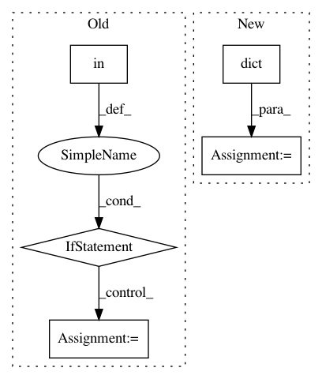

9b7004cbbf674beb5cc486cf524e07dc8f7324a3,skopt/optimizer/optimizer.py,Optimizer,__init__,#Optimizer#,171
Before Change
elif initial_point_generator == "hammersly":
from skopt.samples import Hammersly
self._initial_point_generator = Hammersly()
elif initial_point_generator in ["lhs", "lhs_classic"]:
from skopt.samples import Lhs
self._initial_point_generator = Lhs(lhs_type="classic")
elif initial_point_generator == "lhs_centered":
from skopt.samples import Lhs
self._initial_point_generator = Lhs(lhs_type="centered")
elif initial_point_generator == "lhs_maximin":
After Change
self._initial_samples = None
self._initial_point_generator = initial_point_generator
if init_point_gen_kwargs is None:
init_point_gen_kwargs = dict()
self.init_point_gen_kwargs = init_point_gen_kwargs
if initial_point_generator != "random" and \
isinstance(initial_point_generator, str):
if initial_point_generator == "sobol":
In pattern: SUPERPATTERN
Frequency: 3
Non-data size: 5
Instances
Project Name: scikit-optimize/scikit-optimize
Commit Name: 9b7004cbbf674beb5cc486cf524e07dc8f7324a3
Time: 2020-02-15
Author: holgernahrstaedt@gmx.de
File Name: skopt/optimizer/optimizer.py
Class Name: Optimizer
Method Name: __init__
Project Name: jbms/beancount-import
Commit Name: ff005d4104f638bb4ceaaeb709dc8e1ed69ed5cc
Time: 2016-01-10
Author: jeremy@jeremyms.com
File Name: beancount_import/cli.py
Class Name: JournalState
Method Name: apply_changes
Project Name: andresriancho/w3af
Commit Name: e53c47b39cc62ad5d484e284ecef94668bb2a8c1
Time: 2018-01-09
Author: andres.riancho@gmail.com
File Name: w3af/core/controllers/profiling/scan_log_analysis.py
Class Name:
Method Name: show_total_http_requests